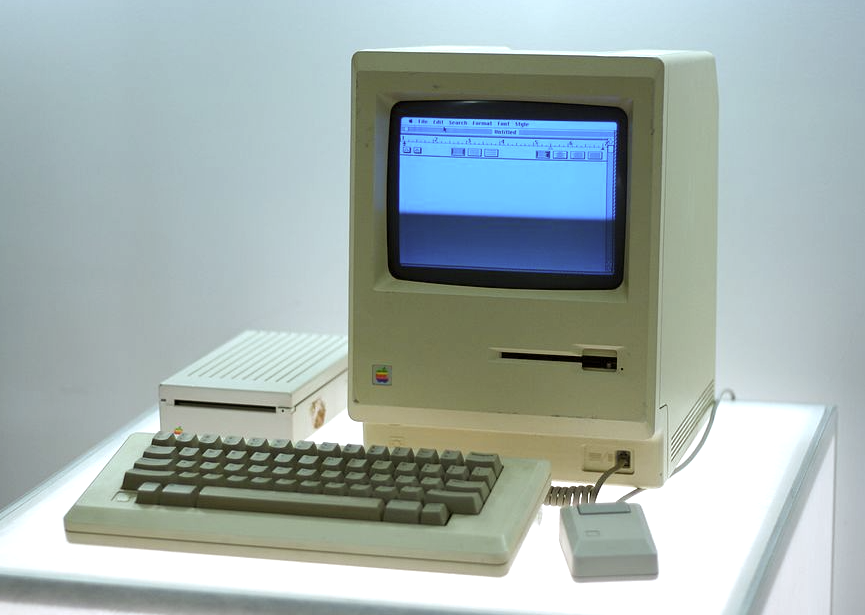

Интеграция 1С и CRM: как перестать переносить данные вручную
Во многих компаниях заказы создаются в CRM, а счета и отгрузки — в 1С, и менеджеры дублируют одни и те же данные в двух системах.

Двусторонняя интеграция через API синхронизирует контрагентов, товары, цены и статусы оплат: менеджер видит в CRM, что счёт оплачен, а бухгалтерия получает заказ без перепечатывания. Подробнее о таких проектах — sverdlov.pro.
Перед запуском важно договориться, какая система главная для каждого справочника, и настроить журнал ошибок обмена, чтобы сбои не терялись.